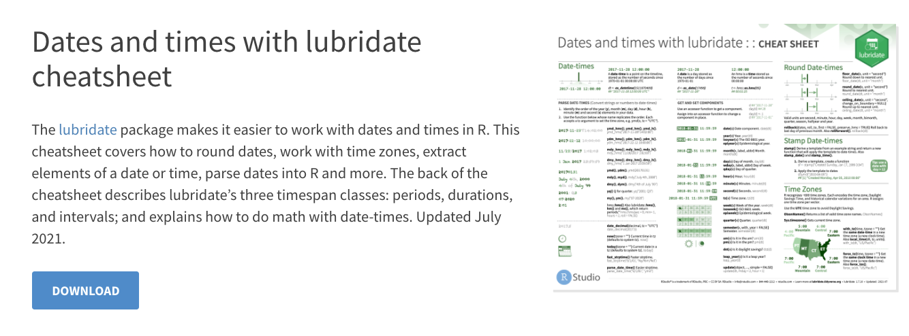

היכרות עם lubridate
מדריך קצר לעבודה נכונה יותר עם תאריכים ב R

תאריך כסוג של משתנה
סוגי המשתנים שהכי שכיח להשתמש בהם ב R הם מספרים, מחרונות, ומשתנים בוליאנים (משתנים שמקבלים ערך של או אמת או שקר) .
על כל סוג משתנה ניתן לבצע פעולות, נניח אפשר לחבר 2 מספרים
88 + 54## [1] 142או להפוך את כל האותיות במחרוזת לאותיות ראשיות
my_name <- 'inigo montoya'
print(toupper(my_name))## [1] "INIGO MONTOYA"בניתוח נתונים אנחנו הרבה פעמים מוצאים את עצמנו עובדים עם דאטה שיש בו משמעות לזמן, והוא מכיל משתנה מסוג תאריך.
עבודה עם תאריכים ב R יכולה להיות מאוד מתסכלת וקשה, כי הפקודות הבסיסיות של השפה אינן כתובות באופן ידידותי למשתמש.
אבל אל דאגה!
יש ספריה שתעשה לכם את החיים הרבה יותר קלים ופשוטים.
lubridate
lubridate היא ספריה שהמטרה שלה היא להפוך את העבודה עם משתני תאריכים לקלה.
בשימושים העיקרים שלי בה הם:
- שינוי וקטורים לפורמט תאריך (היא יודעת לעבוד אינספור פורמטים שונים)
- חילוץ נתון מסוים, כמו היום בשבוע מתוך וקטור תאריכים
- חישובים של הפרשי זמנים
שימוש ב Chear Sheets
לחלר גדול מהספריות בכי פופולאריות ב R ניתן למצוא פוסטרים שימושים שמסבירים איך להשתמש בפונקציות של הספריה באופן נגיש ואינטואיטיבי.
הכינוי של הפוסטרים האלו הוא “Cheat Sheets” ואפשר למצוא אותם ישר מתוך Rstudio על ידי לחיצה על
Help -> Cheat sheets -> Browse Cheets Sheets…

לאחר הלחיצה תועברו לקישור https://www.rstudio.com/resources/cheatsheets/ שבין השאר, ניתן למצוא בו קובץ הסברים על lubrudate

אני ממליץ להציץ בקובץ, ובקבצים מקבילים של ספריות אחרות. ניתן ללמוד מהם הרבה.
שימוש בספריה
אני הדגים איך לבצע את 3 המשימות הבסיסיות שיש לנו בעבודה עם תאריכים
אטען את הספריה עם pacman, המשמשת כמנהל הספריות ב R.
אם אתם לא מכירים אותה, תקראו את הפוסט שבו אני מסביר עליה
pacman::p_load(lubridate)1 התאמת פורמט תאריך
לפני שאנחנו מנתחים תאריכים, ראשית יש לוודא שהפורמט של המשתנה הוא אכן פורמט של תאריך, ולא חלילה מחרוזת.
ראשית, אצור וקטורי מחרוזות שמכילים ״תאריכים״ במספר פורמטים שונים
date_format_1 <- c("2020-04-29", "2020-09-06", "2020-09-30")
date_format_2 <- c("2020/04/29", "2020/09/06", "2020/09/30")
date_format_3 <- c("29.4.2020", "6.9.2020", "30.9.2020")ואראה שהסוג משתנה שהם עכשיו הוא מחרוזת ולא תאריך
print(class(date_format_1))## [1] "character"print(class(date_format_2))## [1] "character"print(class(date_format_3))## [1] "character"הוקטור הראשון הוא במבנה ש R רוצה שתאריך יהיה בו. שנה, חודש ואז יום.
כדי לשנות אותו למשתנה מסוג תאריך נשתמש בפונקציה
date_format_1 <- as_date(date_format_1)print(class(date_format_1))## [1] "Date"מגניב.
שתי הוקטורים הנוספים הם תאריכים בפורמט קצת אחר.
הדרך לשנות להמיר אותם לתאריכים ב lubridate נראת ככה:
date_format_2 <- ymd(date_format_2)
date_format_3 <- dmy(date_format_3)
print(date_format_2)## [1] "2020-04-29" "2020-09-06" "2020-09-30"print(date_format_3)## [1] "2020-04-29" "2020-09-06" "2020-09-30"ניתן לראות שאכן המשימה בוצאה, פשוט על ידי התאמת הפונקציה למשתנה התאריך במחרוזת שקיבלנו, כאשר y צריך להיות במקום שהחלק של השנה נצבמא בתאריך שלנו m צריך להיות במקום שהחלק של החודש נמצא בתאריך שלנו, ו d במקום שבו מופיע היום.
2 חילוץ מידע מתאריכים
מעולה. הוקטורים שלנו עכשיו משתני תאריך, ואנחנו יכולים להפעיל המון פונקציות עליהם!
נניח שאני רוצה לדעת מאיזה יום בשבוע, או מאיזה תאריך בשנה התאריך שלי לקוח.
הדרך של lubridate לעשות את זה נראת ככה:
wday(date_format_1)## [1] 4 1 4week(date_format_1)## [1] 18 36 40ובאופן דומה ניתן להוציא כל שביב מידע מהתאריכים שלכם דוגמאות רבות לאיך לעשות זאת ניתן למצוא ב Cheat Sheet של הספריה.
3 מרחק בין תאריכים
מעניין לדעת, מה היה התאריך לפני 50 יום, לכל אחד מהתאריכים בוקטור שלי
date_format_1 - days(50)## [1] "2020-03-10" "2020-07-18" "2020-08-11"קליל ופשוט, הרבה יותר טוב מהדרך של base-r
סרטון הסבר על הספריה
בסרטון הזה שהועבר כחלק ״כלכלה בעולם הביג דאטה״ - קורס בפקולטה לכלכלה של אוניברסיטת תל אביב אני מסביר מעט יותר בפירוט על הספריה ועל עבודה עם תאריכים.
תהנו :)
Ophir Betser
Researcher in Israel’s MOF
An opinion without data is just an opinion. Data without logic is just numbers.